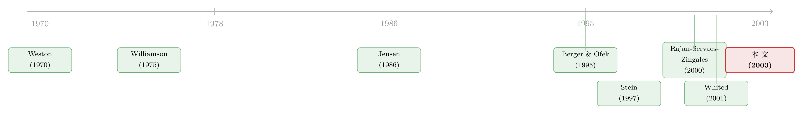

钱往哪个分部流，才算「肥水没流外人田」？
本文读的是 Billett & Mauer (2003, Review of Financial Studies)：一家多元化公司内部「这个分部补贴那个分部」的资金腾挪，到底是创造价值还是毁灭价值？作者的答案出人意料地干净——关键不在于钱流向了「好项目」还是「坏项目」，而在于接钱的那个分部，如果单飞出去会不会借不到钱。补贴一个本会受融资约束的小分部，哪怕它的投资机会平平，也显著抬高公司价值；而把钱从一个投资机会好的分部抽走，则显著毁灭价值。一句话：是融资约束，而不是「乱花钱」本身，定义了内部资本市场的价值。
1 一桩二十年的悬案
先抛一个老问题：一家既造飞机零件、又开连锁餐厅的多元化公司（diversified firm），它值多少钱？
如果你把它拆成「一篮子专做飞机零件的公司」加「一篮子专做餐厅的公司」，再把这两篮子的市值加起来——你会发现，这个多元化公司的真实市值，常常低于这个加总。这就是著名的 多元化折价（diversification discount）。Lang and Stulz (1994)、Berger and Ofek (1995) 都把它量了出来，幅度动辄百分之十几。
折价从哪来？最顺理成章的解释是：这家公司在内部乱配资本。Jensen (1986) 和 Stulz (1990) 说，手里现金太多的公司，会忍不住往那些根本没什么好机会的业务里砸钱（过度投资）；Rajan, Servaes, and Zingales (2000)、Scharfstein and Stein (2000) 则进一步说，是分部经理之间的「抢地盘、争租金」把资本配歪了。这一派的标签叫内部资本市场的「阴暗面」（dark side）。
但故事还有另一面。Weston (1970)、Williamson (1975)、Stein (1997) 这一派坚持：内部资本市场恰恰可以创造价值——只要外部融资是有摩擦、有成本的，总部就能把钱从「现金多但没机会」的分部，调拨给「机会多但缺钱」的分部，这正是单飞的小公司做不到的事。这是「光明面」（bright side）。
于是经验研究就吵成了一锅粥。Lamont (1997)、Shin and Stulz (1998)、Scharfstein (1998)、RSZ (2000) 一边找到交叉补贴（cross-subsidization）、并说配置是低效的；Berger and Ofek (1995) 发现折价随着「往低 Q 行业投得越多」而越大。可另一边，Villalonga (2000) 和 Whited (2001) 站出来说：你们的证据多半是测量误差和选择偏误造出来的幻觉——一旦把分部投资机会的估计偏误修正掉，折价甚至会反转成溢价。
吵到这个份上，争论的焦点其实已经悄悄跑偏了。大家都在问「内部配置到底是高效还是低效」，却很少有人直接去问那个最该问的问题——
2 真正该问的问题
内部资本市场的价值，到底由什么决定？
Billett and Mauer 这篇论文的野心，就是把「多元化公司的超额价值（excess value）」和「它内部资本市场的价值」直接挂钩，逐项拆开来看。它的核心洞察可以浓缩成一句话：
把钱从一个分部调到另一个分部，这件事值不值钱，取决于接钱的分部如果作为独立公司、会不会面临外部融资约束。
这就是这篇文章和此前所有研究最不一样的地方。在它之前，没有任何一个内部资本市场价值的度量，是以「融资约束」为条件来构造的。光明面理论说得很清楚——内部市场之所以可能创造价值，前提就是外部融资有摩擦。那么检验它，就必须把「这笔补贴是不是流向了一个否则借不到钱的分部」这个条件,显式地写进度量里。
围绕这一个核心，全文层层展开。
3 怎么量「补贴」与「转移」
要检验上面的命题，第一步是把「谁补贴了谁」量化出来。这里作者的做法和文献里两种主流方法都不一样，也是全文最见功力的一步。
文献里的老办法有两种。第一种（Shin and Stulz 1998 等）：把分部资本开支对「别的分部的现金流」做回归，系数为正就算交叉补贴的证据——Whited (2001) 批评说，Q 的测量误差会严重污染这个系数。第二种（Scharfstein 1998、RSZ 2000）：用分部资本开支减去「同行业单一分部公司的中位数开支」——但 Chevalier (2000)、Villalonga (2000) 等都指出，会选择多元化的公司，其投资机会系统性地不同于那些选择单干的同行，拿单一分部公司做基准本身就有偏。
Billett and Mauer 绕开了这两个坑。他们的基准不是「别人」，而是分部自己挣的钱。一个分部当年的资本开支，凡是超出它自己税后现金流的那部分，就是它从内部市场拿到的补贴：
这里的税后现金流，是用分部报告的息税前利润、加回折旧、再减去推算的利息与税负算出来的：
$$\text{ATCF}_i = (\text{EBIT}_i - I_i)(1 - T_i) + D_i$$
其中利息 \(I_i\) 是用「分部销售额 × 同行业单一分部公司利息/销售额中位数」推算，税率 \(T_i\) 同理用中位数推算。这个推算当然不完美——作者很诚实地用 SFAS No. 131 之后 1999–2000 年那批能算出真实净利润的 190 个分部做了外部检验：估计值与真实值的偏差，均值 23.5%、中位数 4.6%；均值与零无显著差异，但符号秩检验下中位数在 5% 水平显著为正。换句话说，这套推算略微高估了分部现金流、从而略微低估了补贴。好在第 3 节的稳健性检验说明结论对现金流的合理替代度量并不敏感。
反过来，如果一个分部挣得比花得多（\(\text{Subsidy}_i = 0\)），它就是内部市场的资金提供者。但它能往外掏的钱，得先扣掉自己该分摊的那份公司分红：
$$\text{PTransfer}_i = \max(\text{ATCF}_i - w_i\,\text{DIV}_j - \text{CAPEX}_i,\ 0)$$
\(w_i\) 是该分部按资产占比分到的分红权重。最后，实际转移额（transfer）还要受一个约束——转移总额不能超过补贴总额：
$$\text{Transfer}_i = \min\!\left(\text{PTransfer}_i,\ \frac{\text{PTransfer}_i}{\sum_{i=1}^{n}\text{PTransfer}_i}\sum_{i=1}^{n}\text{Subsidy}_i\right)$$
这个「允许补贴超过转移、但不允许转移超过补贴」的设计很关键。它的经济含义是：补贴可以来自两个源头——要么是别的分部转过来的（这时补贴 = 转移），要么是公司对外融资借来的（这时补贴 > 转移）。而多元化公司的「共保效应（coinsurance effect）」恰恰降低了对外举债的成本（Galai and Masulis 1976、Kim and McConnell 1977 等），所以一家多元化公司能融到的、用于补贴的钱，本来就可以多于内部腾挪的量。数据印证了这一点：4204 个公司-年样本里，补贴超过转移的有 1296 例（31%），而补贴大于零、转移却等于零的有 703 例（17%）——也就是说，相当一部分被补贴的投资，是靠外部融资撑起来的。
4 两把尺子：相对效率，与融资约束
光知道「谁补贴了谁」还不够，还得回答两个问题：这笔补贴效率高不高？接钱的分部缺不缺钱？
第一把尺子——相对效率。 作者用了两种度量。一种是分部的「兄弟调整后资产收益率（sibling-adjusted ROA）」：用本分部的 ROA 减去公司其余分部的资产加权平均 ROA。补贴流向 ROA 更高的分部叫高效（efficient），流向更低的叫低效（inefficient）；转移则相反。这笔资金对内部市场价值的贡献，就是「相对效率 × 资金量」：
$$(\text{ROA}_i - \overline{\text{ROA}})\,(\text{Subsidy}_i), \qquad (\overline{\text{ROA}} - \text{ROA}_i)\,(\text{Transfer}_i)$$
ROA 是流量指标，不能像 Q 那样把价值资本化，于是作者又做了第二种度量：为每个分部拟合一个 Q（fitted Q）。每个样本年里，拿同一两位 SIC 行业内的全部单一分部公司，估计
$$Q_{jt} = \beta_0 + \beta_1 \text{SIZE}_{jt} + \beta_2 \text{CFA}_{jt} + \beta_3 \text{TO}_{jt} + \varepsilon_{jt}$$
再把系数套到多元化公司各分部身上，算出一个拟合 Q。这么做，正是为了绕开 Villalonga、Whited 们批评的那个偏误——不再假定「分部的投资机会等同于同行业单一公司的 Q」。
第二把尺子——融资约束。 这是全文最具原创性的一步。作者用单一分部公司估计一个 logistic 模型，算出「某个补贴分部如果作为独立公司、会面临外部融资约束的概率」，据此把补贴分成流向受约束分部和流向不受约束分部两类。
把这两把尺子叠加，整个内部资本市场被拆成六个零件：流向受约束分部的高效/低效补贴、流向不受约束分部的高效/低效补贴、以及高效/低效转移。然后逐一去看，每个零件对超额价值的贡献是正是负。
（用「分拆」这把手术刀给内部资本市场做活体解剖的思路，可对照《拆开来看，钱才流到对的地方》；而钱为什么总往「看得最清」的业务堆，则可参见《为了「显得能干」，钱都堆去了那块看得最清的业务》。）
5 反转：值钱的不是「机会」，是「约束」
样本是 1990–1998 年、921 家多元化公司、4204 个公司-年观测，超额价值用 Berger and Ofek (1995) 基于资产、销售、盈利乘数的三套口径来算。
第一个结果，平平无奇：和 Berger and Ofek 一样，样本里的多元化公司确实相对可比的单一分部组合显著折价。
第二个结果，开始有意思了：超额价值与整体内部资本市场度量之间，没有可靠的统计关联。如果你只看一个加总的数，会以为内部市场对价值毫无影响——这恰恰解释了为什么以往文献吵不出结果。
但真正关键的一步，是把那六个零件分开看。于是反转出现了：
- 高效补贴流向「否则会受融资约束」的分部——显著抬高超额价值。这正是光明面理论的预言。
- 高效补贴流向「不受约束」的分部——从来不是超额价值的显著决定因素。
两相对照，结论锋利无比：补贴一个投资机会好的分部，只有当这个分部单飞会借不到钱时，才值钱。 否则，市场会想：这点钱它自己上市场也能融到，你帮它融有什么稀奇？是融资约束，而不是「投资机会好」本身，撑起了内部市场与公司价值之间的那座桥。
转移这边也对称：低效转移（把钱从投资机会好的分部抽走）显著毁灭价值；而高效转移（把钱从机会差的分部抽走）几乎没有影响。
最出人意料的是第三类：流向受约束分部的低效补贴——也就是补贴那些「又小、又缺钱、投资机会还偏偏不怎么样」的分部——竟然也显著抬高了超额价值。这与高效市场理论矛盾，却正中 RSZ (2000) 模型的下怀：在 RSZ 的故事里，总部故意把钱从「大而机会好」的分部，转给「小而机会差」的分部，是为了安抚后者的经理、压制他们去搞自利投资的冲动。在本文样本里，这些「低效受约束补贴」的分部确实又小、机会又差，与 RSZ 的设定严丝合缝。
6 那「多样性」呢？——一个没站住的预言
故事到这里几乎要给 RSZ 完胜了。但作者多走了一步，去检验 RSZ 模型的一个更尖锐的预言：这种低效交叉补贴，应该在「分部间规模加权投资机会的差异（diversity）越大」时越重要。
结果是半真半假。一方面，流向低效受约束分部的补贴金额，确实随 diversity 上升而增加——这一半对了。但另一方面，「低效受约束补贴 → 超额价值」这个正向关系，并没有在更多样化的公司里变得更强——这一半没站住。
于是作者收得很克制：低效受约束补贴能创造价值这件事是真的，但没有证据表明它依赖于公司投资机会的多样性。换句话说，RSZ 机制能解释「补贴往哪流」，却解释不了「补贴为什么值钱」。把所有线索拼起来，唯一贯穿始终的主线还是那一条——融资约束。
（关于 diversity 这个维度怎样被拿来给多元化折价做检验，可对照《拆开，是为了把「不一样」分开》。）
7 文献脉络
把这条线捋一遍。最早，Weston (1970) 和 Williamson (1975) 提出多元化公司的内部层级可以替代外部市场来配置资本；Jensen (1986) 则从反面提醒，自由现金流会诱发过度投资。八九十年代，Lang and Stulz (1994)、Berger and Ofek (1995) 把多元化折价钉成了一个 stylized fact。理论上，Stein (1997) 给「光明面」立了规矩——内部市场创造价值的前提是外部融资有摩擦、总部会「挑赢家（winner-picking）」；实证上，Lamont (1997)、Shin and Stulz (1998)、RSZ (2000) 找到了交叉补贴与低效。

紧接着是「测量误差与选择偏误」的反扑：Whited (2001) 用一致估计量后发现低效证据消失，Villalonga (2000)、Campa and Kedia (2002) 指出折价多半是选择偏误。Billett and Mauer (2003) 站在这场混战的正中央——它既用拟合 Q 绕开了偏误批评，又第一个把融资约束显式写进内部市场价值的度量，从而把「光明面 vs 阴暗面」的二元争吵，重构成了一个更精确的命题：价值由约束定义。它也和 Hubbard and Palia (1999)（1960 年代并购潮里，无约束买家收购有约束目标时收益更高）、以及一批跨国研究（新兴市场里几乎没有多元化折价，因外部融资更难）遥相呼应——只不过本文证明：即便在资本市场高度发达的美国，融资约束依然在定价。
评论与延伸（Q&A + 研究方向）
(a) 几个可能的疑问
Q：这篇文章和「内部市场是高效还是低效」的老争论，本质区别在哪？
老争论的隐含前提是「效率 = 价值」：高效配置增值，低效配置减值。本文把这个等式打破了。它说，决定价值的第一性变量是融资约束：哪怕是低效补贴，只要接钱的分部本会受约束，也能增值（RSZ 式的安抚机制）；哪怕是高效补贴，只要接钱的分部本不缺钱，也不增值。效率只在「转移」一侧（抽走好分部的钱会毁值）保留了直觉。
Q：用「分部自己的现金流」做补贴的基准，真的比用同行业单一公司更干净吗？
它确实绕开了「拿单干公司当基准」的选择偏误（会多元化的公司投资机会本就不同）。但代价是引入了现金流推算误差——利息和税率都是拿同行业中位数套出来的。作者自己的外部检验显示中位数偏差 4.6% 且统计上显著，方向是高估现金流、低估补贴。所以这把尺子不是无偏的，只是把偏误从「基准选择」挪到了「现金流推算」，并论证后者更小、更可控。
Q：「补贴可以超过转移」这个设定会不会把外部融资和内部腾挪混为一谈？
不会，反而是刻意区分。补贴 = 转移，说明这笔钱来自兄弟分部；补贴 > 转移，说明差额来自对外融资。31% 的样本补贴超过转移、17% 的样本纯靠外部融资支撑补贴——这恰恰是「共保效应降低举债成本」的直接证据，也正是多元化相对单干的独特优势所在。
Q：整体内部市场度量与超额价值无关，是不是说明内部市场其实不重要？
恰恰相反。加总度量把符号相反的六个零件搅在一起（增值的受约束补贴 + 毁值的低效转移）相互抵消，自然看不出关系。这正是以往用单一加总指标的研究结论打架的原因。本文的贡献就是证明：必须分解，信号才显现。
Q：低效受约束补贴增值这个结果，会不会只是反向因果——业绩好的公司才敢这么补贴？
这是个真威胁。作者用公司固定效应控制了跨公司的报告习惯差异，但「补贴—价值」之间仍可能有同期的内生性（比如总部观察到分部前景好转才补贴，而前景好转本身推高了估值）。文章的识别更多是相关性分解而非因果实验，这是它最该被追问的软肋。
Q：这套结论对今天还成立吗？样本毕竟是 1990 年代。
机制（融资约束定义内部市场价值）应当稳健，但量级未必。1990 年代后美国资本市场进一步深化、SFAS No. 131 改善了分部披露，受约束分部的比例和补贴的边际价值都可能下降。这反而是个值得用新数据重做的好题。
(b) 几个可能的研究问题与提案
1. 用债务市场重新检验「共保效应」补贴。 【经济故事】本文论证补贴可超过转移、差额靠对外融资，且多元化降低举债成本。但它没直接看债。如果共保效应是真的，受约束分部多、补贴缺口大的多元化公司，应当能以更低的信用利差发债。 【可行性】中。需把 TRACE/Mergent 公司债数据与 CIS 分部数据匹配，用分部层面的「融资约束密度」预测发行人信用利差，控制评级与久期。识别难点是多元化本身与信用质量的内生性，可借并购形成的多元化做事件研究。
2. 把「融资约束分部补贴」与外资持有人挂钩。 【经济故事】若外部融资约束是内部市场价值的源泉，那么当一家公司的股东里外资比例上升、外部融资渠道变宽时，内部补贴的边际价值应当下降。这能直接检验「内外部资本市场是替代品」的命题。 【可行性】中。需 FactSet/13F 与跨国持股数据匹配分部信息，识别可用指数纳入（MSCI）带来的外资流入冲击作为外生变化。数据可得，但分部级别的颗粒度是瓶颈。
3. 把这套六分量度量搬到危机窗口。 【经济故事】融资约束在衰退里更咬人（这一点可参见《融资约束，为什么偏偏在好年景里更咬人？》与《把好天气存进坏天气：多元化，是一张衰退里才兑现的「信用保单」》）。那么「受约束分部补贴增值」的效应，应该在 2008、2020 这类外部融资骤紧的时点显著放大。 【可行性】高。本文度量可直接复制到 2007–2009、2020 样本，用 diff-in-diff 比较高约束密度与低约束密度多元化公司的超额价值变动，识别相对干净。
4. 现金流推算误差的稳健化。 【经济故事】本文最大的技术软肋是分部现金流靠中位数推算。SFAS No. 131 之后分部披露更细，今天可用更丰富的真实分部净利润重估补贴，看核心结论是否随测量改善而改变。 【可行性】高。纯数据工程，无需新识别策略，是一个低风险、确定 doable 的复制性贡献。
我的判断
这篇文章的贡献，不在于它发明了多复杂的方法，而在于它问对了问题。当整个文献都在「高效还是低效」的二元对立里打转时，它退后一步，把「融资约束」这个光明面理论的真正前提，从背景假设提升为度量的核心条件变量。结果是把一锅相互矛盾的实证结论，重新整理成一条干净的主线：内部资本市场的价值，由约束定义，而非由效率定义。六分量分解的设计尤其漂亮——它解释了为什么加总指标总是「不显著」，从而把以往的混战归因到了度量本身。
我的担忧主要在识别。全文本质是一个精细的相关性分解，而非因果设计。「低效受约束补贴增值」这种反直觉结果，很难排除「总部预见到分部前景好转才补贴」的反向因果；公司固定效应能洗掉报告习惯，洗不掉同期的内生选择。其次，整套补贴度量建立在分部现金流的中位数推算上，作者自己的外部检验也承认它有方向性偏误，虽然不大。
后续我最想看到的，是把这套度量接上外生的融资约束冲击——无论是危机窗口、信贷供给冲击，还是外资准入的放开——让「约束定义价值」这个命题，从一个漂亮的横截面相关，变成一个能站得住的因果陈述。在公司债与信用市场这一侧，它尤其有戏：如果共保效应真的让多元化公司能更便宜地为受约束分部融资，那这条暗线本该在信用利差里留下指纹。
参考文献
Berger, P. G., and E. Ofek (1995). Diversification's Effect on Firm Value. Journal of Financial Economics 37, 39–65.
Billett, M. T., and D. C. Mauer (2003). Cross-Subsidies, External Financing Constraints, and the Contribution of the Internal Capital Market to Firm Value. Review of Financial Studies 16(4), 1167–1201.
Campa, J. M., and S. Kedia (2002). Explaining the Diversification Discount. Journal of Finance 57, 1731–1762.
Chevalier, J. A. (2000). What Do We Know About Cross-Subsidization? Evidence from the Investment Policies of Merging Firms. Working paper, University of Chicago.
Hubbard, R. G., and D. Palia (1999). A Reexamination of the Conglomerate Merger Wave in the 1960s: An Internal Capital Markets View. Journal of Finance 54, 1131–1152.
Jensen, M. C. (1986). Agency Costs of Free Cash Flow, Corporate Finance, and Takeovers. American Economic Review 76, 323–329.
Lamont, O. (1997). Cash Flow and Investment: Evidence from Internal Capital Markets. Journal of Finance 52, 83–109.
Lang, L., and R. M. Stulz (1994). Tobin's Q, Corporate Diversification, and Firm Performance. Journal of Political Economy 102, 1248–1280.
Rajan, R., H. Servaes, and L. Zingales (2000). The Cost of Diversity: The Diversification Discount and Inefficient Investment. Journal of Finance 55, 35–80.
Scharfstein, D. S., and J. C. Stein (2000). The Dark Side of Internal Capital Markets: Divisional Rent-Seeking and Inefficient Investment. Journal of Finance 55, 2537–2564.
Shin, H., and R. M. Stulz (1998). Are Internal Capital Markets Efficient? Quarterly Journal of Economics 113, 531–552.
Stein, J. C. (1997). Internal Capital Markets and the Competition for Corporate Resources. Journal of Finance 52, 111–133.
Stulz, R. M. (1990). Managerial Discretion and Optimal Financing Policies. Journal of Financial Economics 26, 3–27.
Villalonga, B. (2000). Diversification Discount or Premium? New Evidence from BITS Establishment-Level Data. Working paper, UCLA.
Weston, J. F. (1970). The Nature and Significance of Conglomerate Firms. St. John's Law Review 44, 66–80.
Whited, T. M. (2001). Is it Inefficient Investment that Causes the Diversification Discount? Journal of Finance 56, 1667–1692.
Williamson, O. E. (1975). Markets and Hierarchies: Analysis and Antitrust Implications. Collier McMillan, New York.